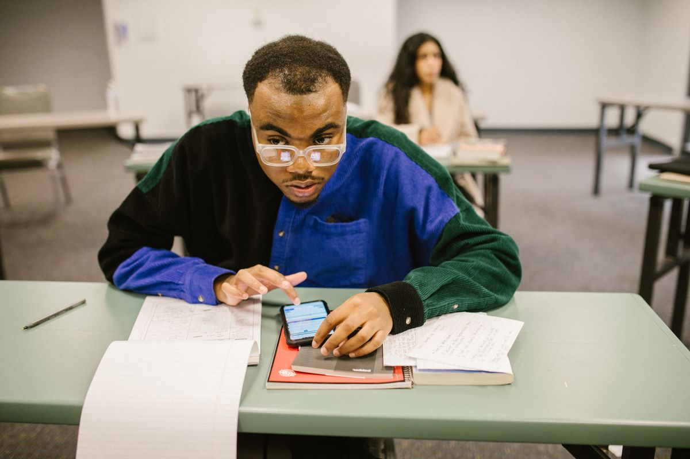

Cek NISN online bisa dilakukan gratis lewat portal resmi Kemendikdasmen di nisn.data.kemendikdasmen.go.id. Siapkan nama lengkap, tempat dan tanggal lahir, serta nama ibu kandung persis seperti di akta kelahiran, lalu isi formulir Pencarian Nama dan klik Cari Data. NISN 10 digit akan muncul bersama nama sekolahmu. Kalau sudah punya nomornya, pakai menu Pencarian NISN untuk memastikan datanya valid.
NISN adalah Nomor Induk Siswa Nasional, kode 10 digit yang diterbitkan pemerintah pusat untuk setiap siswa di sekolah ber-NPSN, dari SD sampai SMA/SMK, termasuk Paket A, B, dan C. Nomor ini melekat seumur hidup: tidak berubah saat kamu pindah sekolah atau naik jenjang, dan dipakai saat mendaftar ke jenjang berikutnya. Selain lewat portal, NISN juga tercantum di rapor, ijazah, atau Surat Keterangan Lulus, jadi bisa dicek tanpa internet. Kalau portal tidak menemukan datamu, jangan bayar jasa apa pun: pencarian resmi gratis, dan perbaikan data hanya bisa dilakukan operator sekolah lewat Dapodik.
Apa Itu NISN dan Kenapa Kamu Butuh Nomornya?
NISN adalah kode pengenal siswa yang diterbitkan pemerintah pusat lewat sistem Dapodik, yang pengelolaannya diatur dalam Permendikbudristek Nomor 31 Tahun 2022 tentang Satu Data Pendidikan, Kebudayaan, Riset, dan Teknologi. Berbeda dengan NIS, nomor induk buatan sekolah yang berubah saat kamu pindah, NISN berlaku nasional dan tetap sama seumur hidup. Tiga digit pertamanya menunjukkan tahun kelahiran, tujuh digit sisanya angka unik dari sistem. Nomor ini dipakai di banyak urusan sekolah, termasuk pendaftaran ke jenjang berikutnya. Karena itu, siswa kelas akhir yang sebentar lagi lulus sebaiknya mengecek NISN-nya dari sekarang, supaya data keliru masih sempat diperbaiki lewat sekolah.
Bagaimana Cara Cek NISN Online Lewat Nama?
Ini cara yang paling sering dipakai, terutama kalau kamu lupa nomornya sama sekali. Yang kamu butuhkan hanya data dari akta kelahiran atau kartu keluarga, dan koneksi internet dari HP atau laptop.
- Buka browser di HP atau laptop, lalu kunjungi nisn.data.kemendikdasmen.go.id. Perhatikan alamatnya: sejak kementerian berganti nama menjadi Kemendikdasmen, alamat lama nisn.data.kemdikbud.go.id sudah tidak aktif.
- Pilih menu Pencarian Nama di pojok kanan atas halaman.
- Isi nama lengkap, tempat lahir, tanggal lahir, dan nama ibu kandung. Tulis persis seperti di akta kelahiran atau kartu keluarga, karena satu huruf yang berbeda bisa membuat data tidak ditemukan.
- Centang verifikasi captcha, lalu klik Cari Data.
- Kalau datamu cocok, layar akan menampilkan NISN, nama lengkap, dan nama sekolah tempat kamu terdaftar. Catat nomornya atau simpan tangkapan layarnya di tempat yang aman.

Bagaimana Cara Validasi NISN Pakai Nomornya?
Sudah punya nomor NISN dari rapor atau ijazah tapi ragu datanya masih cocok? Validasi lewat menu yang sama, caranya begini.
- Buka lagi nisn.data.kemendikdasmen.go.id, lalu pilih menu Pencarian NISN.
- Masukkan 10 digit NISN dan nama ibu kandung, lalu klik Cari Data.
- Sistem menampilkan nama dan sekolah yang terdaftar atas nomor itu. Kalau nama dan sekolahnya sesuai dengan datamu, NISN itu valid dan bisa dipakai untuk pendaftaran apa pun.
Cara ini berguna sebelum kamu mendaftar ke jenjang berikutnya, mengajukan beasiswa, atau mengurus berkas lain yang meminta NISN, supaya tidak ketahuan salah di menit terakhir.
Kenapa NISN Tidak Ditemukan dan Bagaimana Mengatasinya?
Ini keluhan paling umum. Datanya benar, tapi portal menjawab tidak ditemukan. Biasanya penyebabnya satu dari lima hal ini.
- Sekolah belum menyinkronkan data ke Dapodik. Solusinya: tanya operator sekolah apakah data siswa baru sudah diinput dan disinkronkan.
- Ejaan nama atau nama ibu kandung tidak sama dengan akta kelahiran. Solusinya: cocokkan lagi huruf demi huruf dengan KK atau akta, termasuk spasi dan gelar.
- NISN ganda karena terdaftar di dua sekolah. Solusinya: lapor ke operator sekolah supaya data ganda dihapus lewat Verval PD.
- Siswa pindahan dan sekolah baru belum memperbarui status di Dapodik. Solusinya: minta sekolah baru memperbarui datamu.
- NIK di data sekolah tidak cocok dengan data Dukcapil. Solusinya: minta operator memperbarui NIK di Dapodik supaya sinkron dengan KK.
Perbaikan data tidak bisa kamu lakukan sendiri dari portal publik. Jalurnya selalu lewat operator sekolah lewat Verval PD. Prosesnya gratis dan biasanya butuh 1x24 jam sampai dua minggu, tergantung antrean. Kalau semua cara sudah dicoba dan NISN tetap tidak ketemu, hubungi Unit Layanan Terpadu Kemendikdasmen di nomor 177.
Apakah NISN Bisa Dicek Pakai NIK?
Banyak yang mengira NISN bisa dicari langsung dengan NIK, karena NIK tercantum di KK dan mudah diingat. Faktanya, portal resmi sampai November 2026 belum menyediakan pencarian berdasarkan NIK. Pencarian tetap memakai nama lengkap, tempat dan tanggal lahir, serta nama ibu kandung. NIK tetap penting di balik layar: data NISN disinkronkan dengan data Dukcapil, jadi NIK yang tercatat di Dapodik harus sama dengan KK. Kalau berbeda, data bisa tidak sinkron dan portal tidak menampilkannya.
Belum Punya NISN? Ini Jalurnya
Siswa tidak bisa mendaftarkan NISN sendiri. Nomor ini diterbitkan lewat Dapodik setelah sekolah menginput data peserta didik, jadi pengurusannya selalu lewat operator sekolah. Kalau kamu siswa baru dan NISN belum muncul beberapa minggu sesudah masuk sekolah, tanyakan ke operator apakah datamu sudah diinput dan disinkronkan. Siswa pindahan jangan minta nomor baru: NISN lama tetap dipakai, dan sekolah baru hanya memperbarui statusmu di Dapodik.
Intinya, cek NISN itu gratis dan cuma butuh beberapa menit, asal datamu di sekolah sudah benar. Cek dari sekarang, jangan menunggu pendaftaran dibuka dan antrean operator menumpuk. Kalau nomornya sudah ketemu dan valid, simpan baik-baik: nomor yang sama akan kamu pakai dari pendaftaran sekolah sampai pendaftaran kuliah.
Baca juga: cek cara cek BPJS Kesehatan aktif atau tidak lewat HP dan cara cek SLIK OJK online lewat HP kalau kamu juga sedang mengurus dokumen lain, atau baca cara membuat SKCK online 2026 lewat HP buat keperluan melamar kerja. Lihat juga artikel Other lainnya.
Sumber dan Info Resmi
Fakta dan langkah di artikel ini merujuk ke sumber berikut:
- CekNISN.com: portal resmi baru nisn.data.kemendikdasmen.go.id, alamat lama nisn.data.kemdikbud.go.id sudah tidak aktif, NISN 10 digit dengan tiga digit pertama menunjukkan tahun kelahiran, dasar pengelolaan data pendidikan Permendikbudristek Nomor 31 Tahun 2022 tentang Satu Data Pendidikan, Kebudayaan, Riset, dan Teknologi, langkah Pencarian Nama dan Pencarian NISN, portal belum menyediakan pencarian berdasarkan NIK, perbaikan data hanya lewat operator sekolah dan Verval PD, ULT Kemendikdasmen di nomor 177.
- MyExams: alamat baru nisn.data.kemendikdasmen.go.id, langkah pencarian berdasarkan nama, NISN tidak berubah saat naik jenjang, perbaikan lewat Verval PD, pengaduan lewat ULT Kemendikdasmen.
- Iuwashtangguh: portal resmi tidak menyediakan pencarian langsung berdasarkan NIK, NISN 10 digit dan berlaku sepanjang masa, Verval PD untuk perbaikan data.
- Supernews: proses perbaikan data biasanya butuh 1x24 jam sampai maksimal dua minggu, tergantung antrean.
- Haifest: perbaikan data NISN dan Dapodik gratis dan hanya bisa dilakukan operator sekolah resmi atau Dinas Pendidikan, waspada joki berbayar.